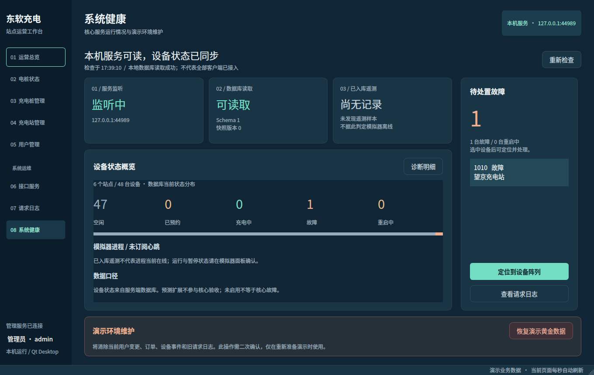

能量脉冲 · 设备阵列与故障处置
服务端两页的结构级改造。以下是原生 Qt 控件截图，查看页不执行重启或复位操作；数据来自隔离的黄金库与测试样本，不是正式库现场运行记录。
已通过的双端对照 · 模拟器与其他管理页 · 系统健康 · 主题联合对照
电桩状态 · 从设备分布到故障操作

站点按 ID 分组；状态筛选、设备选择和列表模式可用。右侧展示额定功率与累计使用情况，不冒充瞬时采样。只有故障状态且快照可用时才能提交重启，确认默认取消；收到回包后仍等待新快照。
系统健康 · 分项观测与待处置队列

监听、数据库读取、已入库遥测分别表达。模拟器未订阅进程心跳，不显示虚构在线状态；也没有虚构 CPU、内存或综合健康分。黄金数据复位仍需二次确认，且与故障处置区分开。
联合对照 · 已通过主题与本轮延展
均为 1360×860、1× 原生截图，全景同比缩小以适应查看窗口。新页面没有独立原稿，依据已通过的主题延展；业务布局与数据不同，不宣称逐像素一致。
已通过运营总览 · 视觉依据 本轮电桩状态 · 派生布局
本轮电桩状态 · 派生布局
侧面板层次 · 1:1 局部
原生主题依据 · 设备信息
本轮页面 · 选择与处置